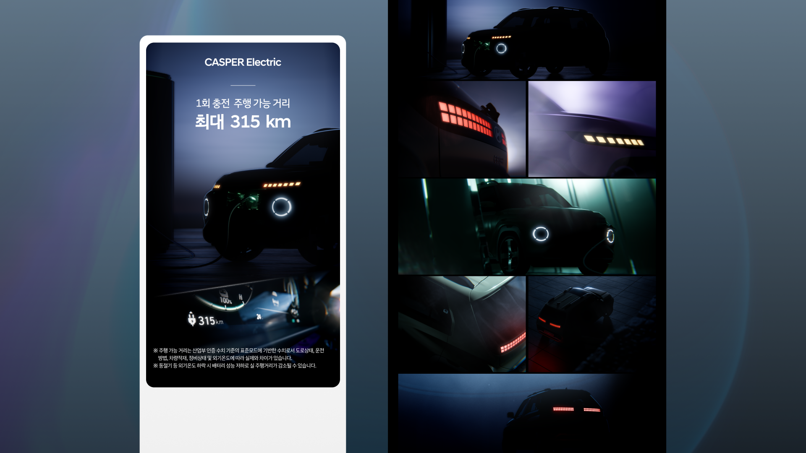
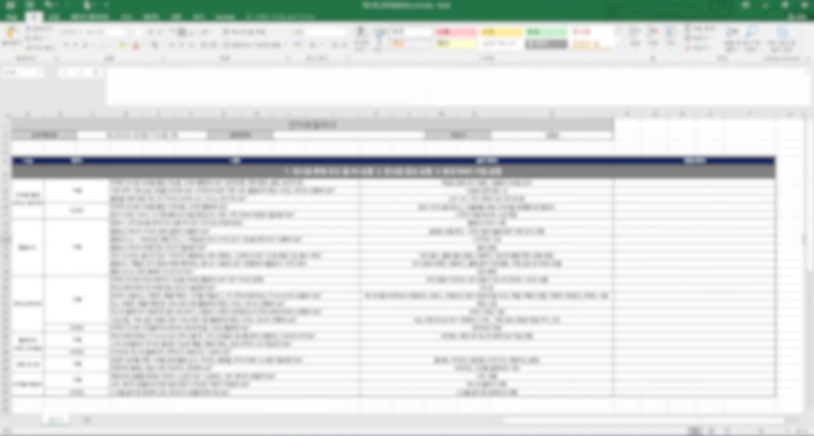

D2C 전시장 · 고객 여정
온라인에서만 구매할 수 있는 캐스퍼의 오프라인 체험을 화상 구매 상담으로 이어지는 여정으로 설계했습니다.
기간2023.07 – 2024.03
프로젝트현대자동차 캐스퍼 스튜디오 2.0 구축
담당서비스 기획 · 요구사항 분석 · 접점별 화면 설계 · QA
팀 구성서비스 기획 1 · 디자인 1 · 모바일 퍼블리싱 1
현장에서 차량을 체험해도 구매는 온라인에서 진행해야 했습니다.
캐스퍼 스튜디오는 온라인 전용 판매 구조를 오프라인에서 보완하는 신규 전시장이었습니다. 창문형 사이니지부터 모바일 출입과 커넥터까지 역할이 다른 디지털 접점이 놓여 있었습니다. 고객이 공간을 이동해도 탐색 맥락을 유지하고 구매를 고민하는 순간에는 상담과 시승으로 넘어갈 수 있어야 했습니다.
7개 디지털 접점
요구사항 인터뷰로 7개 접점의 우선순위를 정하고 다자간 실행을 조율했습니다.
전시장 서비스 방향 및 요구사항 제시, 주간 스크럼 배석
발주 및 개발 구조·시스템 연계 총괄
영업 및 백엔드 구현 (기획·디자인·모바일 퍼블리싱은 담당)
- 여정 재설계 판단RFP 기반 요구사항을 접점별로 그대로 배치하면 정보와 톤이 끊긴다고 보고, 인터뷰로 구체화한 내용을 반영해 입장→탐색→옵션비교→상담→시승으로 이어지는 하나의 여정 기준으로 7개 접점의 역할과 우선순위를 재설계
- 커넥터 UX 고도화 판단기존 유사 전시 프로젝트의 좌측 메뉴+소형 iframe 구조가 아이맥 환경에서 정보 밀도가 낮다고 판단해, iframe을 상단 전체 화면으로 옮기고 메뉴를 하단으로 내려 재구성
- 본인인증 재사용 판단모바일 My PASS 발급 시 진행한 NICE 본인인증 정보를 재사용해, 커넥터의 견적 수신·상담 신청·시승 예약에서 본인인증을 다시 요구하지 않도록 설계
- 무인 운영 기준 판단일정 시간 미사용 시 메인 화면 복귀, 접점별 직원 호출 버튼 배치로 상주 인력 없이도 대응 가능한 운영 기준 정의
조율 방식: 현대오토에버와는 주간 스크럼(현대차 담당자 배석)으로 진행 상황과 의사결정 사항을 공유했고, 공동수급 협력사와는 디자인·퍼블리싱·개발 커뮤니케이션과 QA를 조율했습니다.
고객 여정을 결정한 근거와 설계·QA 과정을 산출물로 남겼습니다.
01 · 여정 구조 — 재설계한 7개 접점의 전체 흐름
01모바일 본인 인증
02My PASS 발급
03전시장 입장
04공간 및 차량 탐색
05옵션·견적 비교
06상담 요청
07시승 예약 연결

7개 접점과 하위 메뉴까지 정리한 전체 CXJ(Customer Experience Journey) 구조도
02 · 핵심 접점 2곳 — 인증 재사용과 UX 재구성 판단

접점 01 · 모바일 출입
모바일 인증을 전시장 경험의 시작점으로 설계
본인 인증과 My PASS 발급, 이용 안내를 하나의 진입 흐름으로 설계해 입장부터 체험까지 동일한 고객 맥락을 유지했습니다. My PASS의 NICE 본인인증 정보를 재사용해 이후 단계에서 인증을 반복 요구하지 않도록 했습니다.

접점 02 · 커넥터
아이맥 환경에 맞는 커넥터 UX 고도화
기존 좌측 메뉴+소형 iframe 구조를 상단 전체 화면 UX로 재구성하고, 메뉴를 하단으로 내려 차량 비교와 견적 확인이 한 화면에서 이어지도록 설계했습니다.
그 외 접점(웰컴보드·옥외 미디어)도 같은 여정 톤과 우선순위 기준으로 설계했습니다.

웰컴보드 — 공간 안내를 차량 탐색의 시작점으로 배치

옥외 미디어 — 방문 전 관심을 전시장 경험으로 연결
03 · 설계 → 구현 비교 (모바일 출입)

Before · 설계 — 단계별 화면과 기능을 정의한 와이어프레임

After · 구현 — 와이어프레임을 반영해 실제 퍼블리싱한 화면
04 · 기획 산출물 — 요구사항 분석과 협업 기록

현대차 현업 담당자 요구사항을 확인한 인터뷰 질의서

주간 스크럼 참석 및 진행 현황 공유 — 오토에버 PM이 종합해 작성한 주간 보고서
정의한 고객 여정과 운영 기준을 실제 전시장 서비스에 반영했습니다.
7개 접점, 하나의 구매 여정
입장·탐색·옵션 비교·상담·시승까지 끊김 없이 이어지는 단일 여정 완성
재인증 3건 제거
견적수신·상담신청·시승예약마다 전화번호를 다시 입력해야 했던 절차를, 모바일 입장 시 발급한 My PASS 재사용으로 제거
상주 인력 없는 운영 구조
화면 자동 복귀와 접점별 직원 호출 기능으로 무인 운영 가능한 구조 확보
3개 조직 협업 체계
현대차·오토에버·협력 개발사가 참여하는 공동수급 구조에서 주간 스크럼 기반 협업 체계 확립